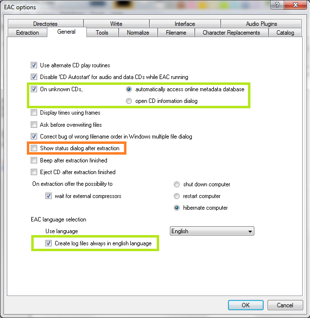

I'd like to thank everyone who helped me with this guide. You know who you are.
Download link: http://exactaudiocopy.de/en/inde...rces/download/
Current version as of this guide: EAC 1.0 beta 3.
This guide was made for EAC version 1.0 beta 3 and will not completely work with earlier versions. Versions 0.99 or earlier should use the blowfish guide.
Anything with a green outline around it is a required setting. Anything orange is required but depends on your drive. Anything unmarked is optional.
Step 1: Download and install EAC
Download the installer and fire it up.
Eventually you'll get to a screen like this. Make sure you install AccurateRip, CDRDAO, CTDB, and freedb as a bare minimum. FLAC will be useful as well if you don't have it separately installed. GD3 is only useful if you want to pay for metadata results. I assume you don't.
Step 2: Start EAC
When you first start EAC, you'll see a screen like this one. Hit "Cancel". Next, put a popular CD into your drive, preferably not one that was recently released (a few months old at least). You'll see a window like the one below appear. If you have an older version of EAC or dBpoweramp installed, it's likely AccurateRip was already configured, and this may not appear.
Hit Configure. It may take a few minutes. Hit "Ok" afterward. Once again, if you have an older version of EAC or dBpoweramp installed, it's likely AccurateRip was already configured, and this may not appear.
Step 3: EAC Options
All of the options dialogs can be found from the EAC menu at the top of the screen.
Start with EAC Options. Any tabs not pictured are completely optional settings, or are irrelevant to ripping.
Make sure you set the green highlighted settings as shown. If you're using an older version of EAC, make sure "No use of null samples for CRC calculations is UNCHECKED. The rest is optional, choose as you will. Locking the drive tray during extraction isn't a bad idea though.

These settings are pretty much all optional and self explanatory. I'd recommend using Alternate CD play routines and disabling autostart though.
The "Create log files always in english language" is very important for our international users. This will let you keep EAC's language as your native one, but write the log file in English, allowing it to pass our logchecker without needing to be rescored manually.
If your drive is capable of reading UPC/ISRC codes and CD-Text (you can only really figure this out by trial and error), you're welcome to keep the top two options checked. Otherwise, uncheck them.
Other than that, these settings are pretty much ideal. I wouldn't recommend using more than 1 compressor thread even if you have a multicore computer. It doesn't take very long compared to the track extraction anyway. Note that in tests run by punkmeup, disabling the queue of external compressors in the background fixed an issue where EAC was generating WAV files instead of FLAC, so I've made that a required option. It should have no bearing on the rip quality. If rip queueing works for you (it does for me), feel free to leave it enabled.
Friends don't let friends normalize their EAC rips. Don't ever do it. It will instantly be given a 0% by the logchecker.
This is the proper way to name tracks. The only difference acceptable here would be perhaps %tracknr2%. %title% if you prefer periods instead of dashes in the filenames. If you need track numbers to go into triple digits for some reason, use %tracknr3% instead.
Naming Convention : %tracknr2% - %title%
Check 'Use Various Artists Naming Scheme' and use : %tracknr2% - %artist% - %title%
Don't replace spaces by underscores. It looks ridiculous.
A note on directory naming schemes: Don't use a directory structure here, unless you want to go back and edit your CUE sheet later. When you add a directory to the naming scheme, it'll put that directory path into the files. Then when someone goes to burn the files in EAC using your cuesheet, they'll be unable to do so. If you do insist on using a directory structure here, you need to go back, edit the CUE in a program such as notepad, and remove the folder name from each line.
For example, a cuesheet line should look like this:
FILE "01 Last Known Surroundings.wav" WAVE
Not like this:
FILE "C:\EAC Rips\Explosions in the Sky - Take Care, Take Care, Take Care (2011) [FLAC]\01 Last Known Surroundings.wav" WAVE
Step 4: Drive Options

Start by hitting "Detect Read Features...". This will actually take a few minutes. The only feature detection that actually matters is Accurate Stream. If your drive can use it, checkmark the setting (most modern drives have Accurate Stream). If it can't, don't.
Even if your drive doesn't cache audio, just do us a favour and leave that checked. Not only will it stop you from having to have each of your uploads rescored by hand, but it doesn't affect the audio quality at all. Yes, the rips take a bit longer with that setting enabled. Go watch TV or something while you wait.
Do not use C2, even if EAC thinks you can. Most drives have terrible C2 error implementation.
Hit "Autodetect read command now". It shouldn't take long. Leave everything else unchecked unless you're having problems. You can checkmark "CD-Text Read capable drive" if you want to test whether your drive can do it. If it can, great, otherwise, uncheck it. It's unlikely you'll ever use that feature anyway.

If you did the AccurateRip configuration at the start of this guide, the top half here will be greyed out. If not, you'll need to find your read offset correction from this list. Don't use a combined read/write offset.
If you want to figure out whether your drive needs "Overread into Lead-in and Lead-Out" checked, you can check by temporarily unchecking "Use AccurateRip with this drive". Stick a CD in the drive and hit "Detect read sample offset correction...". If you're just doing this for the Overread, see below:
Pretty much every drive should work with the settings shown. If yours stalls on detecting gaps or detects gaps that are obviously wrong (like 30 second gaps on a non-live album), try Detection method B or C. If A, B, and C all fail, you can switch "Secure" to "Accurate" and try again.
Step 5: Metadata Options
Here's where you pick your metadata provider. If you did install GD3, it'll be in the list. You can only rip 10 discs before you have to pay for a subscription though. Otherwise, you have a choice between the MusicBrainz plugin (CTDB), freedb plugin and EAC's native freedb support. I'm not really sure what the big difference is, I'm guessing it's the cover+lyrics. Anyway, change those settings above if you wish.
If you use EAC's native freedb instead, the settings should look like this. Make sure you put an email at the top, it doesn't need to be real. Hit "Get active freedb server list". Then checkmark the last option.
Step 6: Compression Options
Set up this tab exactly as shown. You'll have to browse to the path where you have flac.exe, if you installed it with EAC it's in C:\Program Files (x86)\Exact Audio Copy\FLAC\flac.exe. If you installed it separately it's wherever you installed it. The bitrate and high/low quality have no effect on the rip.
The commandline parameters have changed in this version, so this will look new to most of you. The commandline recommended for optimal completeness is this:
-8 -V -T "ARTIST=%artist%" -T "TITLE=%title%" -T "ALBUM=%albumtitle%" -T "DATE=%year%" -T "TRACKNUMBER=%tracknr%" -T "GENRE=%genre%" -T "PERFORMER=%albuminterpret%" -T "COMPOSER=%composer%" %haslyrics%--tag-from-file=LYRICS="%lyricsfile%"%haslyrics% -T "ALBUMARTIST=%albumartist%" -T "DISCNUMBER=%cdnumber%" -T "TOTALDISCS=%totalcds%" -T "TOTALTRACKS=%numtracks%" -T "COMMENT=%comment%" %source% -o %dest%
It takes no extra effort on your part, just copy and paste that into the additional commandline options and you're done.
Note: the %comment% function is broken in version 1.0b2 (it returns the track CRC). Use something like -T "COMMENT=EAC V1.0 beta 2, Secure Mode, Test & Copy, AccurateRip, FLAC -8" instead.
Also, as of Beta 3 you may use the %tracknr1% variable instead of %tracknr% if you would like to have no leading zeroes in the track number field (like XLD does). tracknr1 will use, for example, '1' instead of '01'.
Spoiler:
Show
A note on the FLAC commandline in versions prior to 1.0b3: If you're using EAC 1.0b1, use the following commandline for FLAC:
-8 -V -T "ARTIST=%a" -T "TITLE=%t" -T "ALBUM=%g" -T "DATE=%y" -T "TRACKNUMBER=%n" -T "TOTALTRACKS=%x" -T "GENRE=%m" -T "ALBUMARTIST=%v" -T "COMMENT=EAC V1.0 beta 1, Secure Mode, Test & Copy, AccurateRip, FLAC -8" %s
Anything older than that, just change the version number in the tags.
-8 -V -T "ARTIST=%a" -T "TITLE=%t" -T "ALBUM=%g" -T "DATE=%y" -T "TRACKNUMBER=%n" -T "TOTALTRACKS=%x" -T "GENRE=%m" -T "ALBUMARTIST=%v" -T "COMMENT=EAC V1.0 beta 1, Secure Mode, Test & Copy, AccurateRip, FLAC -8" %s
Anything older than that, just change the version number in the tags.
Spoiler:
Show
A note on ripping to lossy formats like MP3: So first off, this is a
complete waste of time. In most cases, EAC is overkill for lossy files,
and takes far too long to rip the CD to be practical. If your goal is to
upload tracks here, your best bet is to rip once to FLAC and then use a
program like dBpoweramp to convert that rip to the other formats. Even
if you don't need a FLAC (one already exists on site, or this is for
your personal collection only), it'll still be much faster to rip using
any other program, and won't produce an audibly different result unless
your CD has skips and bad scratches.
However, the MP3 and Ogg command lines are included below. You'll need to browse to LAME.exe or oggenc2.exe, and set the extension to .mp3 or .ogg, respectively. The other settings remain the same, bitrate is still irrelevant.
V0 MP3:
-V 0 --vbr-new --add-id3v2 --ignore-tag-errors --ta "%artist%" --tt "%title%" --tg "%genre%" --tl "%albumtitle%" --ty "%year%" --tn "%tracknr%" %source% -o %dest%
V2 MP3:
-V 2 --vbr-new --add-id3v2 --ignore-tag-errors --ta "%artist%" --tt "%title%" --tg "%genre%" --tl "%albumtitle%" --ty "%year%" --tn "%tracknr%" %source% -o %dest%
320 kbps MP3:
-b 320 -h --add-id3v2 --ignore-tag-errors --ta "%artist%" --tt "%title%" --tg "%genre%" --tl "%albumtitle%" --ty "%year%" --tn "%tracknr%" %source% -o %dest%
q8 Ogg:
-q 8 -a "%artist%" -t "%title%" -l "%albumtitle%" -d "%year%" -N "%tracknr%" -G "%genre%" %source% -o %dest%
However, the MP3 and Ogg command lines are included below. You'll need to browse to LAME.exe or oggenc2.exe, and set the extension to .mp3 or .ogg, respectively. The other settings remain the same, bitrate is still irrelevant.
V0 MP3:
-V 0 --vbr-new --add-id3v2 --ignore-tag-errors --ta "%artist%" --tt "%title%" --tg "%genre%" --tl "%albumtitle%" --ty "%year%" --tn "%tracknr%" %source% -o %dest%
V2 MP3:
-V 2 --vbr-new --add-id3v2 --ignore-tag-errors --ta "%artist%" --tt "%title%" --tg "%genre%" --tl "%albumtitle%" --ty "%year%" --tn "%tracknr%" %source% -o %dest%
320 kbps MP3:
-b 320 -h --add-id3v2 --ignore-tag-errors --ta "%artist%" --tt "%title%" --tg "%genre%" --tl "%albumtitle%" --ty "%year%" --tn "%tracknr%" %source% -o %dest%
q8 Ogg:
-q 8 -a "%artist%" -t "%title%" -l "%albumtitle%" -d "%year%" -N "%tracknr%" -G "%genre%" %source% -o %dest%
Leave everything unchecked except the last option.
Congrats! EAC is now properly set up! You may wish to save your settings in a profile by hitting "New" at the bottom of the screen. However, unless you're changing your settings frequently there's no need, EAC will remember all of this on next launch regardless.
Step 7: Tagging
So now let's look at the main window. Be sure everything is named correctly here, as these will be the tags on your ripped files. If you're ripping a classical CD, you may wish to fill in the Composer/Performer fields.
Drag a cover image into the EAC window. I think ~500x500 is a decent size in most cases. Google images is your friend here.
If you're ripping a box set, you may wish to use the options under the cover image, otherwise leave them all as "1".
Finally, if you want to add lyrics to the tracks, use the "Lyrics" button.
Note: I've also highlighted the "New" button where you can save your settings. This is not a necessary step each time you rip.
Step 8: Gap Detection and Cuesheets
The pre-rip stuff happens here. Make sure "Append Gaps to Previous Track (default)" is checked. It should be. Next, hit the options in the order shown.
First, hit "Detect Gaps". This is very important, your rip will fail the logchecker if you do not complete this step. If the first track is highlighted in red, you have a hidden track. You'll want to look at this section of the blowfish.be guide.
Next, go to Create CUE Sheet -> Multiple WAV Files With Gaps... (Noncompliant). This is usually where I create the folder for ripping as well. Do NOT rip your tracks to any directory containing your name. You should NEVER edit a log for any reason, especially now that we have checksums. A simple C:\EAC Rips is fine.
I name my directories as follows:
Artist - Album (Year) [Format] {Extra}
So for example, with the album in the screenshots, it'd be
Sam Roberts Band - Collider (2011) [FLAC] {UMC 0252764577}
However, as long as it contains the album name and no nested folders (don't do \Artist\Album\), you're fine by the rules here.
Anyway, make the folder, save the .cue file into it. I usually just name mine Noncompliant.cue, it doesn't really matter.
Step 9: Ripping
Finally, the rip itself! Make sure all the tracks are checkmarked in the main window unless there are some you don't want to rip.
Test & Copy -> Compressed.
Depending on your drive and whether or not the CD is scratched, this could take anywhere from ten minutes to four hours. Be patient.
Step 10: Post-Rip
So you're done! You may wish to use a logchecker to check and make sure your rip is proper, but if you followed this guide, the only possible errors would be with the CD itself. It does happen... some CDs are too badly damaged, even for EAC. Your best bet is to clean the CD and try again.
Other than that, it never hurts to make sure your files are tagged and named properly (though they should be). Any extra stuff you want to include should be added now as well... Additional artwork, an md5 fingerprint, an info.txt file, that sort of thing.
Appendix A: CueTools Plugin (Optional)
This is now installed by selecting "CTDB" in the EAC 1.0b3 options. Therefore, this will only be necessary for EAC 1.0b1 and 1.0b2, or if you want to update the plugin by hand to a newer version.
Starting with version 1.0b1, EAC now supports plugins! While they've so far been few and far between, the CueTools plugin is quite handy. Not only does it give you a second opinion past the AccurateRip database and include the CueTools hash in the log, but it also gives you an option to get metadata from MusicBrainz if you prefer it to freedb.
Download page:
http://cuetools.net/wiki/CTDB_EAC_Plugin
Installation: Extract the files to EAC's root directory (containing EAC.exe). Usually this is located at C:\Program Files (x86)\Exact Audio Copy.
Usage: None, it works automatically. You can check whether it's installed under EAC Options->Audio Plugins. If you wish to use MusicBrainz, go to Metadata Options and select "CUETools DB Metadata Plugin" from the list.